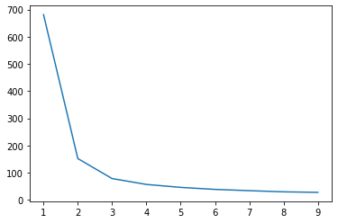

Clustering
Contents
14. Clustering¶
import numpy as np
import pandas as pd
import matplotlib.pyplot as plt
import seaborn as sns
from sklearn.datasets import load_iris
14.1. K-Means¶
14.1.1. toy-example (iris)¶
出動 iris 資料集吧
iris = load_iris()
df_data = pd.DataFrame(data= np.c_[iris['data'], iris['target']],
columns= ['SepalLengthCm','SepalWidthCm','PetalLengthCm','PetalWidthCm','Species'])
df_data
| SepalLengthCm | SepalWidthCm | PetalLengthCm | PetalWidthCm | Species | |
|---|---|---|---|---|---|
| 0 | 5.1 | 3.5 | 1.4 | 0.2 | 0.0 |
| 1 | 4.9 | 3.0 | 1.4 | 0.2 | 0.0 |
| 2 | 4.7 | 3.2 | 1.3 | 0.2 | 0.0 |
| 3 | 4.6 | 3.1 | 1.5 | 0.2 | 0.0 |
| 4 | 5.0 | 3.6 | 1.4 | 0.2 | 0.0 |
| ... | ... | ... | ... | ... | ... |
| 145 | 6.7 | 3.0 | 5.2 | 2.3 | 2.0 |
| 146 | 6.3 | 2.5 | 5.0 | 1.9 | 2.0 |
| 147 | 6.5 | 3.0 | 5.2 | 2.0 | 2.0 |
| 148 | 6.2 | 3.4 | 5.4 | 2.3 | 2.0 |
| 149 | 5.9 | 3.0 | 5.1 | 1.8 | 2.0 |
150 rows × 5 columns
from sklearn.cluster import KMeans
X = df_data.drop("Species", axis = 1)
kmeansModel = KMeans(n_clusters=3, # 分 3 群
n_init = 10, # 起始值有10組，每組分完後，比 inertia，選最小的那組給你
random_state=46, # 產出 10 組起始值時，用的 seed
tol = 0.0001) # 前後兩次 iteration， centers 間的 歐式距離，小於 0.0001 就算收斂
kmeansModel.fit(X)
clusters_pred = kmeansModel.predict(X)
分群結果
clusters_pred
array([1, 1, 1, 1, 1, 1, 1, 1, 1, 1, 1, 1, 1, 1, 1, 1, 1, 1, 1, 1, 1, 1,
1, 1, 1, 1, 1, 1, 1, 1, 1, 1, 1, 1, 1, 1, 1, 1, 1, 1, 1, 1, 1, 1,
1, 1, 1, 1, 1, 1, 0, 0, 2, 0, 0, 0, 0, 0, 0, 0, 0, 0, 0, 0, 0, 0,
0, 0, 0, 0, 0, 0, 0, 0, 0, 0, 0, 2, 0, 0, 0, 0, 0, 0, 0, 0, 0, 0,
0, 0, 0, 0, 0, 0, 0, 0, 0, 0, 0, 0, 2, 0, 2, 2, 2, 2, 0, 2, 2, 2,
2, 2, 2, 0, 0, 2, 2, 2, 2, 0, 2, 0, 2, 0, 2, 2, 0, 0, 2, 2, 2, 2,
2, 0, 2, 2, 2, 2, 0, 2, 2, 2, 0, 2, 2, 2, 0, 2, 2, 0], dtype=int32)
各群的中心
kmeansModel.cluster_centers_
array([[5.9016129 , 2.7483871 , 4.39354839, 1.43387097],
[5.006 , 3.428 , 1.462 , 0.246 ],
[6.85 , 3.07368421, 5.74210526, 2.07105263]])
inertia (within-group sum of variance)
kmeansModel.inertia_
78.85144142614601
選 k
kmeans_list = [KMeans(n_clusters=k, random_state=46).fit(X)
for k in range(1, 10)]
inertias = [model.inertia_ for model in kmeans_list]
plt.plot(range(1,10), inertias);

可以看到，elbow 在 2 or 3，所以可以選 2 or 3 當分群的群數
詳細說明文件，看
KMeans?
KMeans?
Init signature:
KMeans(
n_clusters=8,
*,
init='k-means++',
n_init=10,
max_iter=300,
tol=0.0001,
verbose=0,
random_state=None,
copy_x=True,
algorithm='auto',
)
Docstring:
K-Means clustering.
Read more in the :ref:`User Guide <k_means>`.
Parameters
----------
n_clusters : int, default=8
The number of clusters to form as well as the number of
centroids to generate.
init : {'k-means++', 'random'}, callable or array-like of shape (n_clusters, n_features), default='k-means++'
Method for initialization:
'k-means++' : selects initial cluster centers for k-mean
clustering in a smart way to speed up convergence. See section
Notes in k_init for more details.
'random': choose `n_clusters` observations (rows) at random from data
for the initial centroids.
If an array is passed, it should be of shape (n_clusters, n_features)
and gives the initial centers.
If a callable is passed, it should take arguments X, n_clusters and a
random state and return an initialization.
n_init : int, default=10
Number of time the k-means algorithm will be run with different
centroid seeds. The final results will be the best output of
n_init consecutive runs in terms of inertia.
max_iter : int, default=300
Maximum number of iterations of the k-means algorithm for a
single run.
tol : float, default=1e-4
Relative tolerance with regards to Frobenius norm of the difference
in the cluster centers of two consecutive iterations to declare
convergence.
verbose : int, default=0
Verbosity mode.
random_state : int, RandomState instance or None, default=None
Determines random number generation for centroid initialization. Use
an int to make the randomness deterministic.
See :term:`Glossary <random_state>`.
copy_x : bool, default=True
When pre-computing distances it is more numerically accurate to center
the data first. If copy_x is True (default), then the original data is
not modified. If False, the original data is modified, and put back
before the function returns, but small numerical differences may be
introduced by subtracting and then adding the data mean. Note that if
the original data is not C-contiguous, a copy will be made even if
copy_x is False. If the original data is sparse, but not in CSR format,
a copy will be made even if copy_x is False.
algorithm : {"auto", "full", "elkan"}, default="auto"
K-means algorithm to use. The classical EM-style algorithm is "full".
The "elkan" variation is more efficient on data with well-defined
clusters, by using the triangle inequality. However it's more memory
intensive due to the allocation of an extra array of shape
(n_samples, n_clusters).
For now "auto" (kept for backward compatibility) chooses "elkan" but it
might change in the future for a better heuristic.
.. versionchanged:: 0.18
Added Elkan algorithm
Attributes
----------
cluster_centers_ : ndarray of shape (n_clusters, n_features)
Coordinates of cluster centers. If the algorithm stops before fully
converging (see ``tol`` and ``max_iter``), these will not be
consistent with ``labels_``.
labels_ : ndarray of shape (n_samples,)
Labels of each point
inertia_ : float
Sum of squared distances of samples to their closest cluster center,
weighted by the sample weights if provided.
n_iter_ : int
Number of iterations run.
n_features_in_ : int
Number of features seen during :term:`fit`.
.. versionadded:: 0.24
feature_names_in_ : ndarray of shape (`n_features_in_`,)
Names of features seen during :term:`fit`. Defined only when `X`
has feature names that are all strings.
.. versionadded:: 1.0
See Also
--------
MiniBatchKMeans : Alternative online implementation that does incremental
updates of the centers positions using mini-batches.
For large scale learning (say n_samples > 10k) MiniBatchKMeans is
probably much faster than the default batch implementation.
Notes
-----
The k-means problem is solved using either Lloyd's or Elkan's algorithm.
The average complexity is given by O(k n T), where n is the number of
samples and T is the number of iteration.
The worst case complexity is given by O(n^(k+2/p)) with
n = n_samples, p = n_features. (D. Arthur and S. Vassilvitskii,
'How slow is the k-means method?' SoCG2006)
In practice, the k-means algorithm is very fast (one of the fastest
clustering algorithms available), but it falls in local minima. That's why
it can be useful to restart it several times.
If the algorithm stops before fully converging (because of ``tol`` or
``max_iter``), ``labels_`` and ``cluster_centers_`` will not be consistent,
i.e. the ``cluster_centers_`` will not be the means of the points in each
cluster. Also, the estimator will reassign ``labels_`` after the last
iteration to make ``labels_`` consistent with ``predict`` on the training
set.
Examples
--------
>>> from sklearn.cluster import KMeans
>>> import numpy as np
>>> X = np.array([[1, 2], [1, 4], [1, 0],
... [10, 2], [10, 4], [10, 0]])
>>> kmeans = KMeans(n_clusters=2, random_state=0).fit(X)
>>> kmeans.labels_
array([1, 1, 1, 0, 0, 0], dtype=int32)
>>> kmeans.predict([[0, 0], [12, 3]])
array([1, 0], dtype=int32)
>>> kmeans.cluster_centers_
array([[10., 2.],
[ 1., 2.]])
File: /Volumes/GoogleDrive/我的雲端硬碟/0. codepool_python/python_ds/python_ds_env/lib/python3.8/site-packages/sklearn/cluster/_kmeans.py
Type: type
Subclasses: MiniBatchKMeans
14.1.2. stock movement¶
這個應用蠻好玩的，我們可以對股票的 “走勢” 做分群。
資料如以下：
movements = pd.read_csv("data/company-stock-movements.csv", index_col = 0)
movements.head()
| 2010-01-04 | 2010-01-05 | 2010-01-06 | 2010-01-07 | 2010-01-08 | 2010-01-11 | 2010-01-12 | 2010-01-13 | 2010-01-14 | 2010-01-15 | ... | 2013-10-16 | 2013-10-17 | 2013-10-18 | 2013-10-21 | 2013-10-22 | 2013-10-23 | 2013-10-24 | 2013-10-25 | 2013-10-28 | 2013-10-29 | |
|---|---|---|---|---|---|---|---|---|---|---|---|---|---|---|---|---|---|---|---|---|---|
| Apple | 0.580000 | -0.220005 | -3.409998 | -1.170000 | 1.680011 | -2.689994 | -1.469994 | 2.779997 | -0.680003 | -4.999995 | ... | 0.320008 | 4.519997 | 2.899987 | 9.590019 | -6.540016 | 5.959976 | 6.910011 | -5.359962 | 0.840019 | -19.589981 |
| AIG | -0.640002 | -0.650000 | -0.210001 | -0.420000 | 0.710001 | -0.200001 | -1.130001 | 0.069999 | -0.119999 | -0.500000 | ... | 0.919998 | 0.709999 | 0.119999 | -0.480000 | 0.010002 | -0.279998 | -0.190003 | -0.040001 | -0.400002 | 0.660000 |
| Amazon | -2.350006 | 1.260009 | -2.350006 | -2.009995 | 2.960006 | -2.309997 | -1.640007 | 1.209999 | -1.790001 | -2.039994 | ... | 2.109985 | 3.699982 | 9.570008 | -3.450013 | 4.820008 | -4.079986 | 2.579986 | 4.790009 | -1.760009 | 3.740021 |
| American express | 0.109997 | 0.000000 | 0.260002 | 0.720002 | 0.190003 | -0.270001 | 0.750000 | 0.300004 | 0.639999 | -0.130001 | ... | 0.680001 | 2.290001 | 0.409996 | -0.069999 | 0.100006 | 0.069999 | 0.130005 | 1.849999 | 0.040001 | 0.540001 |
| Boeing | 0.459999 | 1.770000 | 1.549999 | 2.690003 | 0.059997 | -1.080002 | 0.360000 | 0.549999 | 0.530002 | -0.709999 | ... | 1.559997 | 2.480003 | 0.019997 | -1.220001 | 0.480003 | 3.020004 | -0.029999 | 1.940002 | 1.130005 | 0.309998 |
5 rows × 963 columns
可以看到，每一列是一家公司，每一行是時間點，值是股價(大概做過一些調整了，所以有正有負，我們可以不用管他，就當是股價即可)
如果我今天要做的分群，是對絕對的數值做分群，那我就直接用這張表分群就好.
但如果我今天是想對 “走勢” 做分群，那我會希望對 “列” 做標準化。
舉例來說，台積電的股價變化是 600, 580, 600, 620, 640，啟基是 60, 58, 60, 62, 64。
那從 “走勢” 來看，台積跟啟基走勢是一樣的，應該被分為一群，但如果直接做 kmeans，就再見了，因為光 600 和 60 的距離就很遠。
另外，台積股價的變化是 -20, 20, 20, 20; 啟基是 -2, 2, 2, 2，這個變動差距也不同，但如果改成看變化百分比(把股價放分母，變化當分子)，那兩邊就又差不多了.
所以，我如果先對列做標準化，那兩個公司的數值就都變成 [-0.39, -1.37, -0.39, 0.58, 1.56]，一模模一樣樣，euclidean distance 變成 0，分群時一定放在一塊兒
所以，這一個例子，我們就要對 “列” 做標準化，那就要用到
Normalizer這個 preprocessor:
from sklearn.preprocessing import Normalizer
from sklearn.cluster import KMeans
from sklearn.pipeline import Pipeline, make_pipeline
# Create a normalizer: normalizer
normalizer = Normalizer()
# Create a KMeans model with 10 clusters: kmeans
kmeans = KMeans(n_clusters=10)
# Make a pipeline chaining normalizer and kmeans: pipeline
pipeline = make_pipeline(normalizer, kmeans)
# Fit pipeline to the daily price movements
pipeline.fit(movements)
Pipeline(steps=[('normalizer', Normalizer()),
('kmeans', KMeans(n_clusters=10))])
# Predict the cluster labels: labels
labels = pipeline.predict(movements)
# Create a DataFrame aligning labels and companies: df
df = pd.DataFrame({'labels': labels,
'companies': movements.index})
# Display df sorted by cluster label
df.sort_values(["labels"])
| labels | companies | |
|---|---|---|
| 20 | 0 | Home Depot |
| 29 | 1 | Lookheed Martin |
| 36 | 1 | Northrop Grumman |
| 4 | 1 | Boeing |
| 58 | 2 | Xerox |
| 16 | 2 | General Electrics |
| 0 | 2 | Apple |
| 33 | 3 | Microsoft |
| 51 | 3 | Texas instruments |
| 50 | 3 | Taiwan Semiconductor Manufacturing |
| 47 | 3 | Symantec |
| 35 | 3 | Navistar |
| 32 | 3 | 3M |
| 31 | 3 | McDonalds |
| 30 | 3 | MasterCard |
| 2 | 3 | Amazon |
| 24 | 3 | Intel |
| 23 | 3 | IBM |
| 3 | 3 | American express |
| 59 | 3 | Yahoo |
| 8 | 3 | Caterpillar |
| 17 | 3 | Google/Alphabet |
| 11 | 3 | Cisco |
| 13 | 3 | DuPont de Nemours |
| 14 | 3 | Dell |
| 7 | 4 | Canon |
| 45 | 4 | Sony |
| 48 | 4 | Toyota |
| 15 | 4 | Ford |
| 34 | 4 | Mitsubishi |
| 21 | 4 | Honda |
| 22 | 4 | HP |
| 9 | 5 | Colgate-Palmolive |
| 28 | 5 | Coca Cola |
| 38 | 5 | Pepsi |
| 52 | 6 | Unilever |
| 46 | 6 | Sanofi-Aventis |
| 43 | 6 | SAP |
| 42 | 6 | Royal Dutch Shell |
| 19 | 6 | GlaxoSmithKline |
| 6 | 6 | British American Tobacco |
| 37 | 6 | Novartis |
| 49 | 6 | Total |
| 57 | 7 | Exxon |
| 41 | 7 | Philip Morris |
| 44 | 7 | Schlumberger |
| 12 | 7 | Chevron |
| 53 | 7 | Valero Energy |
| 10 | 7 | ConocoPhillips |
| 55 | 8 | Wells Fargo |
| 18 | 8 | Goldman Sachs |
| 1 | 8 | AIG |
| 26 | 8 | JPMorgan Chase |
| 5 | 8 | Bank of America |
| 27 | 9 | Kimberly-Clark |
| 54 | 9 | Walgreen |
| 25 | 9 | Johnson & Johnson |
| 56 | 9 | Wal-Mart |
| 40 | 9 | Procter Gamble |
| 39 | 9 | Pfizer |